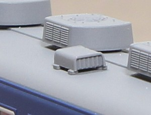
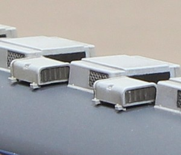

ガーランドベンチレータ -> 押込型ベンチレータ の次の世代のベンチレータです。 この後は冷房と強制換気に移行したため、ベンチレータとしてはほぼ最終形態?に近い気がします。
そしてKATOが頑なにやってくれない特急型電車/客車のベンチレータ別パーツ化。 我が家の車両は、12系/14系からはじまり583系まで、ちまちまと加工による別パーツ化が進行中です。
|  |
定番パーツ、トミックスのPB-103です。 トミックスは屋根上機器の別パーツ化を昔からやっており、旧くは113系/115系あたりの 押し込み型ベンチレータは定番パーツでした。箱型ベンチレータは415系あたりからですかね。 さすがに基本設計がやや旧く、足がちょっと大振りなのと下辺が省略されてるのが目立ちます。 取り付けが穴ひとつなので、位置決めがやりやすく使いやすい部品です。 |
|  |
KATOが50系客車から使い始めたパーツです。 トミックスのものと比べてやや小ぶりでこちらがサイズ的には適正に見えます。 足や切り欠き部にボルトも表現されており精密感があります。 トミックスが金型の抜き方向で省略している下辺を表現しており、ちゃんと箱になってます。 一方でフィンの表現は浅めで板が入ってるように見えます。 取付脚はφ0.6x2で、中央からオフセットが掛かったところについていて位置決めがちょっと大変です。 私は、マニ50・583系あたりから取付方法を確立し使い始めました。 取付寸法はこちらです。 |